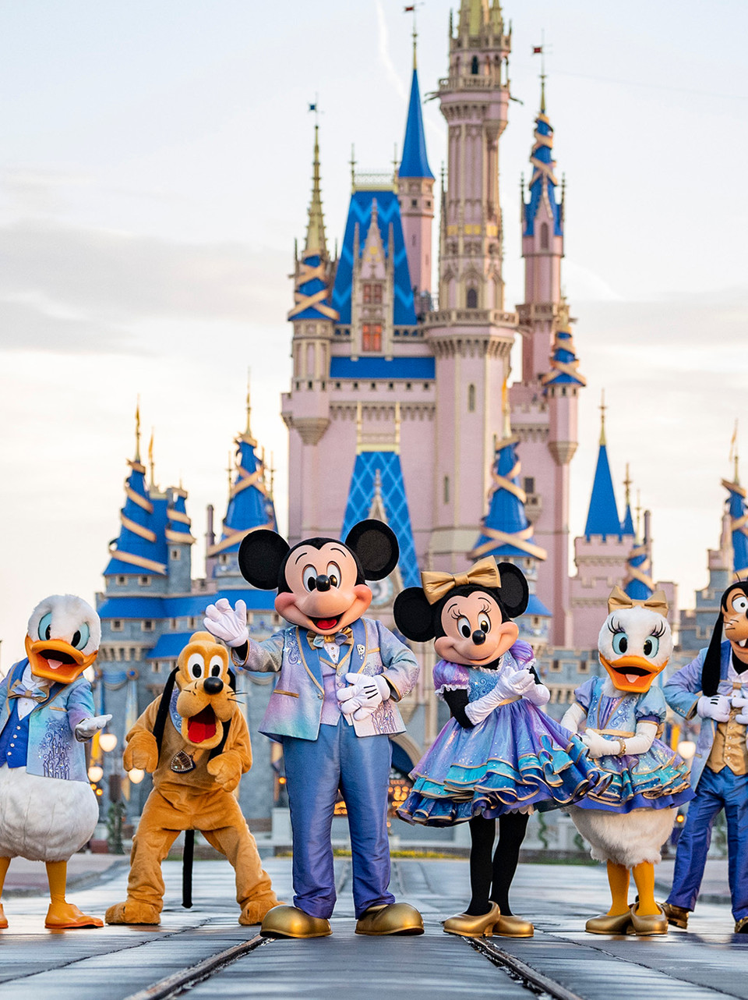

Introduction
Who am I?
My name is Roseanne Arcebido, but you can call me Rosey.
Three Facts
- I was born in Miami.
- I lived in Japan for seven years.
- My favorite food is tacos.
Where am I located?
I am located in Florida, close to Disney World!
About
Development History
My journey with web development began a long time ago... I think a lot of people my age will tell you this, but in fact, I started with HTML when Neopets was born! I was addicted to the site because it was fun to raise different monsters. If my memory serves me right, there was a profile page where you could design it as you please. They had a small guide, and I also searched various resources and got my hands metaphorically dirty! I enjoyed changing the background color and linking to images.
The rest of way was supported by other websites like MySpace and Xanga where I kept playing around. As I grew older, I did small projects here and there. More recently, I tried developing simple Discord bots in Javascript and studied a bit of PHP for a KPOP web forum that I help with. And now I am ready to immerse myself completely!
Hobbies and Likes
I have 6 cats and love to play with them. I love video games, mainly Pokemon, and KPOP, mainly BTOB!
My Cats
- Moon
- Peeky
- Chopper
- Athena
- Sage
- Gandalf
- Precious